Restaurants
There are even a thousand restaurants in Helsinki. They range from peaceful daytime coffees late night pulse. You want to then familiarize yourself traditional Finnish cuisine or sample urban food from around the world, you will find it for yourself suitable place.
Below we've listed a few recommendations to help you get started on your adventure!
The Chapel

"The gem of the Esplanade - a story dating back to 1867. The Chapel's appeal has a long tradition. Spain the beauty of the park, the space of the glass veranda, the precious nature of the building and the modern kitchen are all ready for today's customers."
See here for more!Restaurant Saaristo
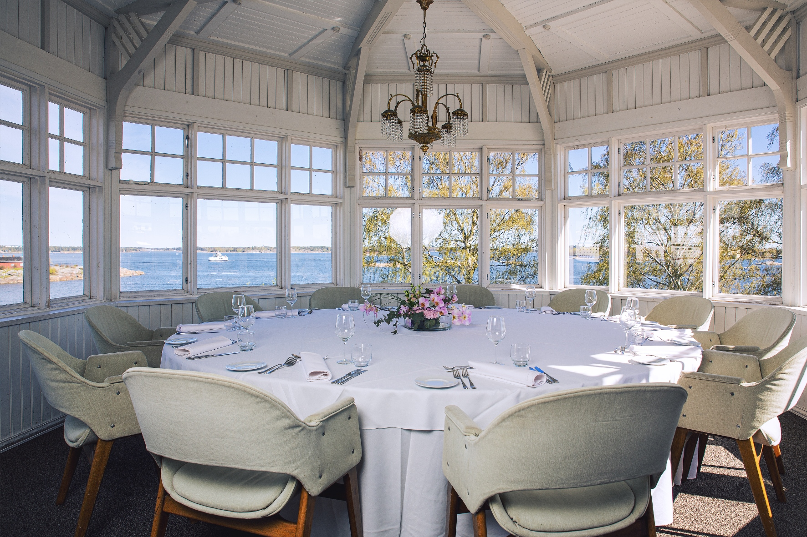"The Art Nouveau villa in front of the Kaivopuisto Park on Klippan's islet is one of the most spectacular in Helsinki and the most traditional restaurants. Completed in 1899, the building is long and colorful history."
See here for more!Restaurant Nokka
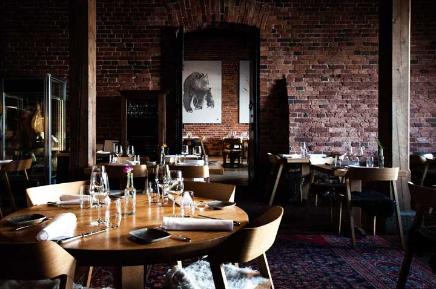"The gastronomic flagship of Finnish food and drink can be found in Katajanokka. Between friends From the Nokka."
See here for more!Restaurants Lappi
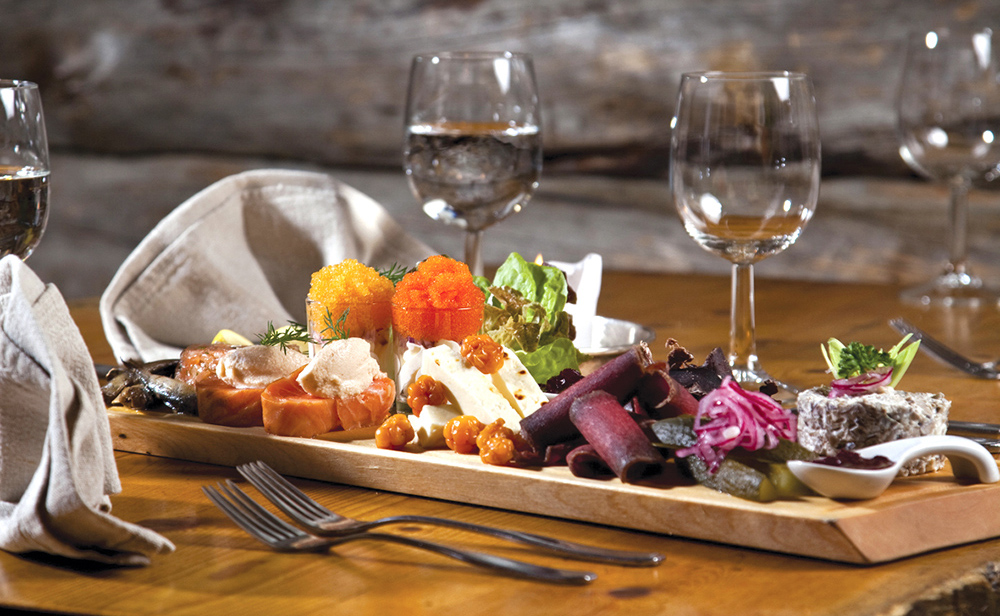"Lapland Restaurant's food and decor are the factors that make the Lapland Restaurant more attractive worthy place. Domestic, clean and above all fresh raw materials guarantee genuine exciting flavors and aromas."
See here for more!OmNam
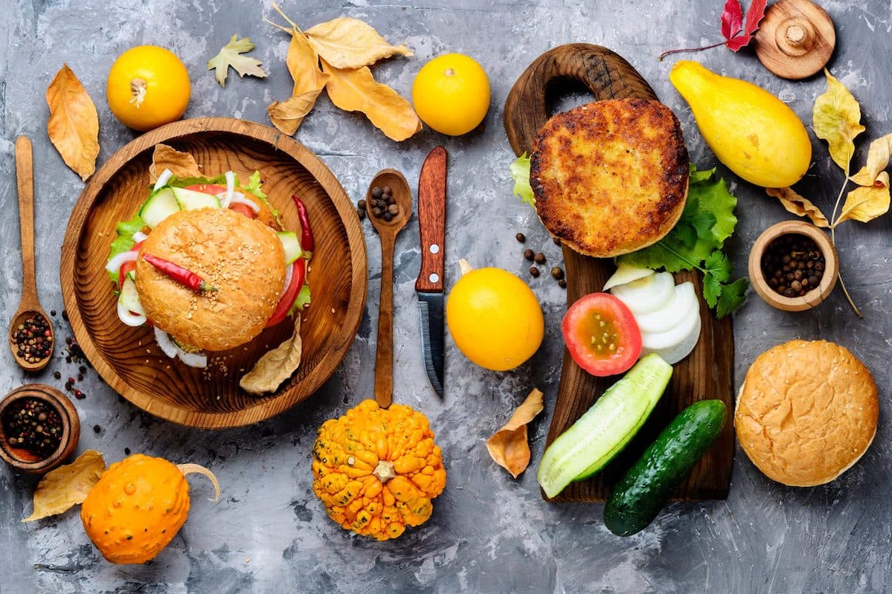"OmNam is a fully vegan restaurant in Kamppi, in the cozy courtyard of Annankatu. food done in ethnic nuances, but also more familiar in Maui."
See here for more!Pupu
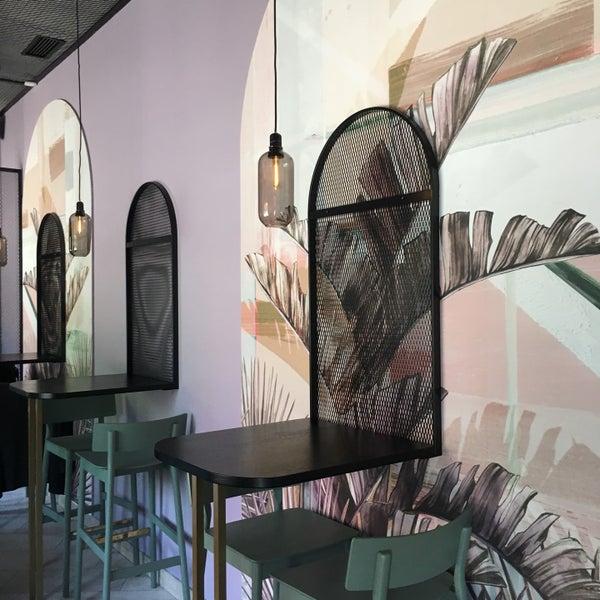"We make handmade salads from quality ingredients and support a lifestyle that promotes the well-being of both the environment and the individual. Make the world a better place - a salad at a time!"
See here for more!Cafe Torpanranta
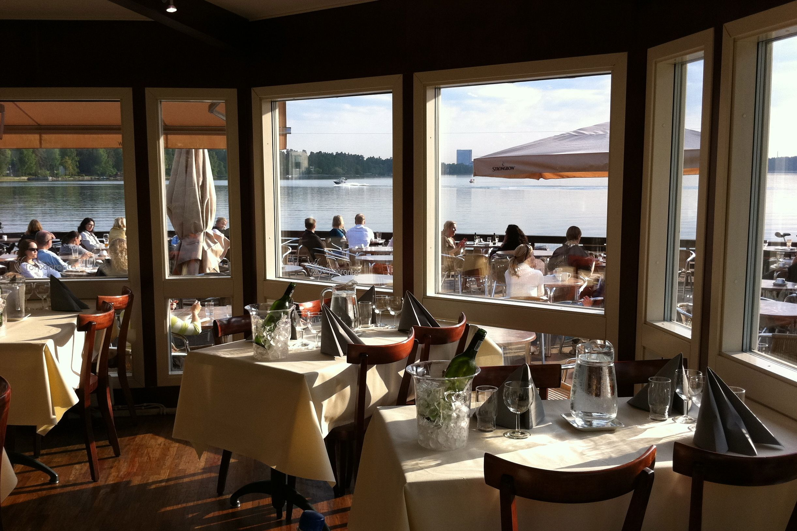"Café Torpanranta on Munkkiniemenranta offers seasonal cuisine changing seascapes for a nice coffee break or a break from a working day. "
See here for more!Karl Fazer Cafe
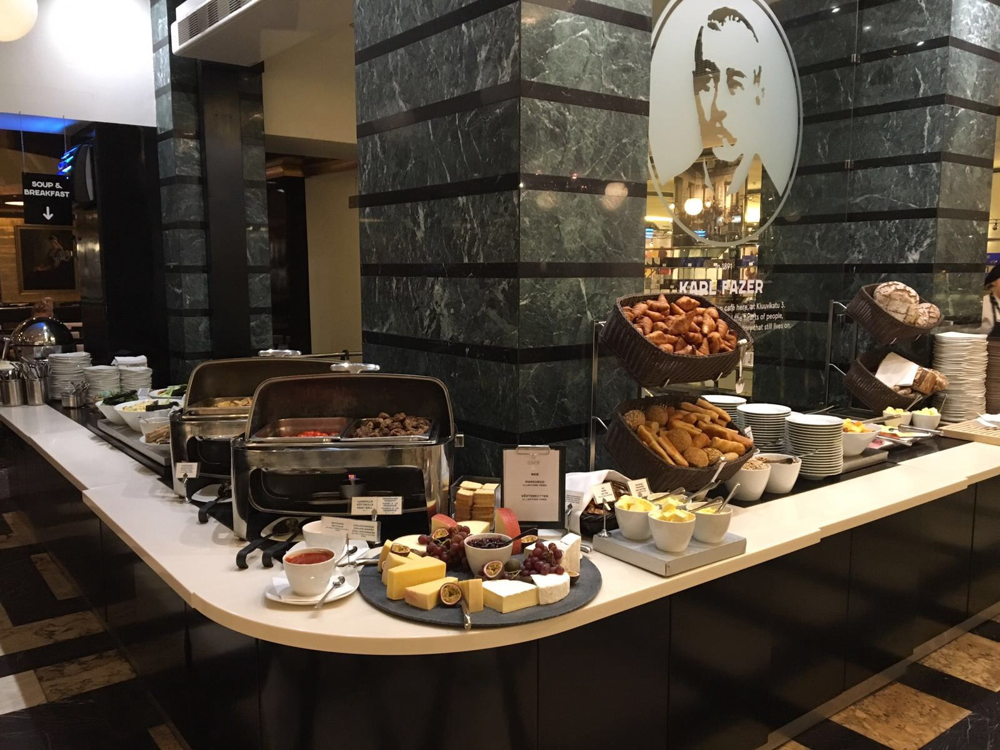"1891, Karl Fazer founded a French-Russian confectionery on Kluuvikatu, which became with its high-quality delicacies and milieu, it is quickly a meeting place for city dwellers. Today's trends and Fazer's 120-year tradition meet in a cozy atmosphere."
See here for more!Art Cafe Taideterassi
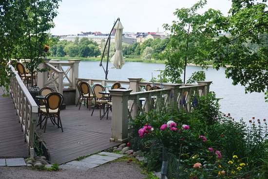"Art Cafe on Helsinki's most spectacular terrace at Linnunlauluntie Blue Villa in Töölönlahti onshore."
See here for more!Ateljee Bar
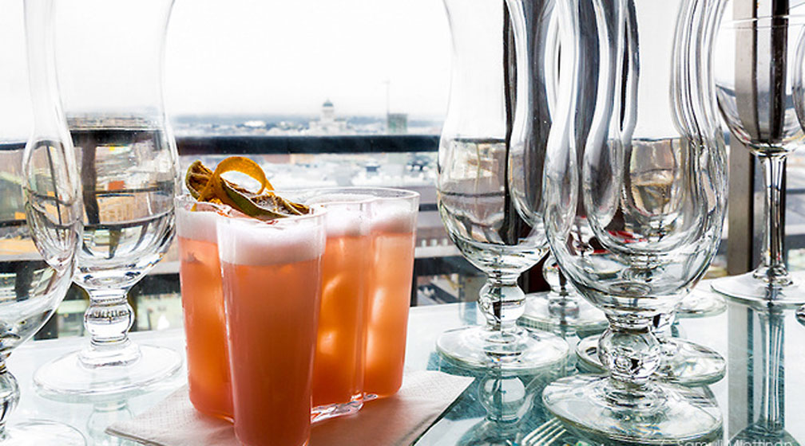"The Ateljee Bar, which has been operating since 1951, is located on the top floor of the Hotel Tower. The terrace offers breathtaking views over the rooftops of Helsinki - sunny weather to the sea as far as Tallinn and in the dark the city lights glow brightly."
See here for more!Trillby & Chadwick
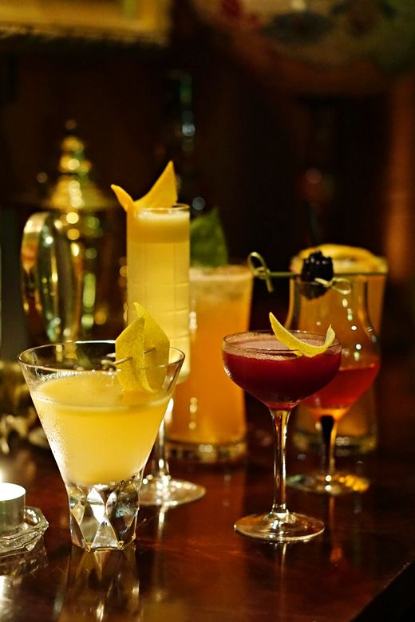"1898 Hildebrand Trillby and Ashcroft Chadwick established a small private in London detective agency, tired of a poorly functioning local police system. in The Helsinki office was established in 1924 with the main task of supervising and preventing the Finnish Prohibition Act alcohol smuggling."
See here for more!Hernesaarenranta

"Hernesaarenranta is an oceanfront event center with good transport links. There is great gigs and different interesting events."
See here for more!Mattolaituri
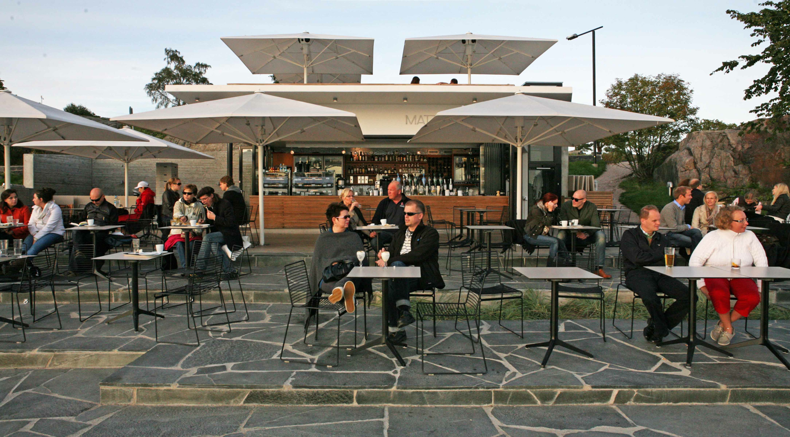"Mattolaituri is on the shore of Kaivopuisto Park, at the beautiful strait between Uunisaari and Harakka located on the seafront terrace restaurant. You can admire the magnificent sea views with a glass of wine either sitting on a beach chair on our own beach or relaxing on the upstairs lounge sofas. "
See here for more!Rymy-Eetu
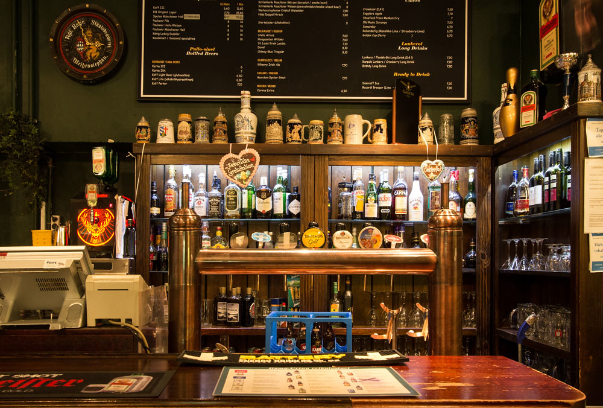"Welcome to Eat, Drink and Dance on the Tables! The crazy Rymy-Eetu is a Finnish-German restaurant in the heart of Helsinki, at Erottaja, next to the Esplanades."
See here for more!